MỤC 01Lịch sử hình thành
Từ một cảng thị ven vịnh Thái Lan, Hà Tiên trở thành dấu mốc quan trọng trong lịch sử Nam Bộ. Vùng đất ấy gắn với họ Mạc, giao thương đường biển và một truyền thống thi ca còn được nhắc nhớ đến ngày nay.
1708: Bước ngoặt dưới thời Mạc Cửu
Vào thế kỷ XVII, nhiều nhóm di dân nhà Minh (Trung Hoa) vì không chịu thần phục nhà Thanh nên đã rời quê hương đi tìm vùng đất mới, trong đó có Mạc Cửu (1655 – 1735). Năm 1671, Mạc Cửu cùng gia quyến, binh sĩ và một số sĩ phu lên thuyền rời Phúc Kiến, xuôi về vùng biển phương Nam.
Sau một thời gian chiêu mộ lưu dân, lập ấp và phát triển giao thương tại vùng duyên hải Tây Nam, Mạc Cửu đã xin quy phục chúa Nguyễn Phúc Chu và được phong chức Tổng binh trấn Hà Tiên. Sự kiện này đánh dấu bước ngoặt quan trọng trong việc gắn kết vùng đất Hà Tiên với chính quyền Đàng Trong.
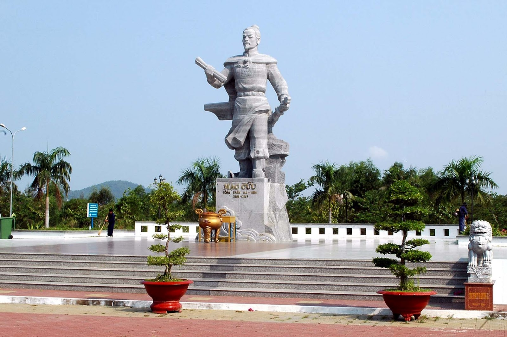
1735–1736: Nối nghiệp khai mở, phát triển văn chương
Năm 1735, Mạc Cửu qua đời. Mạc Thiên Tích nối nghiệp cha, tập trung củng cố bộ máy hành chính, quân sự và mở rộng địa giới sang các vùng đất mới gồm Rạch Giá, Cà Mau, Trấn Di (Bạc Liêu) và Trấn Giang (Cần Thơ). Đến năm 1757, ông tiếp tục sáp nhập thêm 5 phủ thuộc đất Cao Miên vào Hà Tiên. Nhờ đó, trấn Hà Tiên phát triển nhanh chóng với diện tích vô cùng rộng lớn.
Năm 1736, Mạc Thiên Tích sáng lập Tao đàn Chiêu Anh Các nhằm chiêu mộ hiền tài, cùng đàm đạo và xướng họa thơ văn. Sự kiện này đã giúp Hà Tiên tạo dựng được tiếng vang lớn trong giới văn nhân đương thời.
Chỉ trong vòng chưa đầy 20 năm, Mạc Thiên Tích đã đưa Hà Tiên bước vào giai đoạn thịnh đạt toàn diện cả về kinh tế, chính trị lẫn văn hóa. Lần đầu tiên trên vùng đất mới, các hoạt động sáng tác văn chương, in ấn và truyền bá sách vở chữ Hán trở nên vô cùng sôi động.
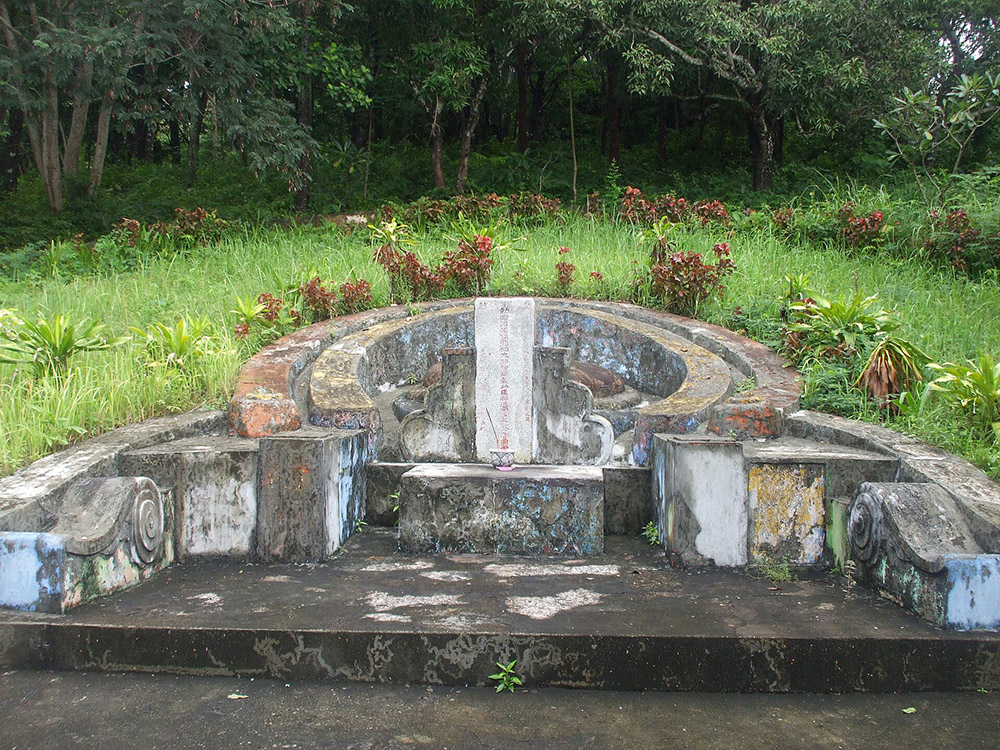
1832–1867: Từ trấn đến tỉnh
Năm 1832, trong cuộc cải cách hành chính, vua Minh Mạng đã bãi bỏ Gia Định thành và chia vùng đất phía Nam thành 6 tỉnh: Biên Hòa, Gia Định, Định Tường, Vĩnh Long, An Giang và Hà Tiên. Trấn Hà Tiên từ đó được đổi thành tỉnh Hà Tiên, đánh dấu bước chuyển đổi sang hệ thống quản lý cấp tỉnh của triều Nguyễn.
Năm 1867, sau khi đánh chiếm Vĩnh Long và Châu Đốc, thực dân Pháp tiếp tục thôn tính Hà Tiên, chấm dứt thời kỳ triều Nguyễn trực tiếp quản lý tỉnh này. Dù tòa thành cũ đã bị phá bỏ vào cuối thế kỷ XIX, các nguồn sử liệu và phát hiện khảo cổ học vẫn góp phần tái hiện rõ nét vai trò giao thương sầm uất một thời của vùng cảng thị này.

2018–2025: Những thay đổi về địa giới hành chính
Theo Nghị quyết số 573 năm 2018, thành phố Hà Tiên thuộc tỉnh Kiên Giang được thành lập trên cơ sở toàn bộ diện tích và quy mô dân số của thị xã Hà Tiên. Tại thời điểm thành lập, thành phố có 7 đơn vị hành chính cấp xã, bao gồm 5 phường (Bình San, Đông Hồ, Mỹ Đức, Pháo Đài, Tô Châu) và 2 xã (Thuận Yên, Tiên Hải).
Đến năm 2025, thực hiện việc sắp xếp đơn vị hành chính cấp xã theo Nghị quyết số 1654, 4 phường Pháo Đài, Bình San, Mỹ Đức và Đông Hồ được sáp nhập để thành lập phường Hà Tiên; đồng thời, phường Tô Châu cùng 2 xã Thuận Yên và Dương Hòa được hợp nhất thành phường Tô Châu mới. Riêng xã Tiên Hải không thực hiện sắp xếp. Tất cả các đơn vị hành chính trên đều trực thuộc tỉnh An Giang mới.
MỤC 02Vị trí địa lý & Phạm vi lãnh thổ
Hà Tiên nằm ở vùng biên giới Tây Nam của Việt Nam, ven vịnh Thái Lan. Sau sắp xếp đơn vị hành chính năm 2025, phường Hà Tiên thuộc tỉnh An Giang, được hình thành từ 4 phường cũ là Bình San, Đông Hồ, Mỹ Đức và Pháo Đài. Phường có diện tích tự nhiên 61,35km² và quy mô dân số 40.609 người.
Sông Giang Thành, đầm Đông Hồ, những núi đá vôi và vùng biển đảo... đã tạo nên cảnh quan đặc trưng của Hà Tiên. Cửa khẩu quốc tế Hà Tiên cùng các tuyến giao thông ven biển giúp vùng đất này kết nối giao thương, du lịch với Campuchia và các địa phương Tây Nam Bộ.
Các giai đoạn thay đổi về phạm vi lãnh thổ
1708: Trấn Hà Tiên thời chúa Nguyễn
Trấn Hà Tiên thời chúa Nguyễn Phúc Chu trải dài khắp dải ven biển Tây Nam, gồm các khu vực như lỵ sở Hà Tiên, Phú Quốc, Rạch Giá và Cà Mau.
1788-1810: Trấn Hà Tiên thời Gia Long
Năm 1788, sau khi chiếm lại Hà Tiên từ quân Xiêm, Nguyễn Ánh đưa hai đạo Kiên Giang và Long Xuyên vào dinh Vĩnh Trấn. Năm 1810, nhà Nguyễn chính thức đưa Kiên Giang và Long Xuyên trở lại trực thuộc phủ An Biên, trấn Hà Tiên.
1832: Tỉnh Hà Tiên thuộc Nam Kỳ lục tỉnh
Năm 1832, vua Minh Mạng (triều đại nhà Nguyễn) cải cách hành chính, chuyển trấn Hà Tiên thành tỉnh Hà Tiên, một trong 6 tỉnh Nam Kỳ. Phạm vi tỉnh Hà Tiên thời kỳ này rộng hơn nhiều so với hiện nay.
1867–giữa thế kỷ XX: Tổ chức lại dưới thời Pháp thuộc
Sau khi chiếm Hà Tiên năm 1867, Pháp tổ chức lại địa bàn thành hạt tham biện Hà Tiên và Rạch Giá. Từ năm 1900, 2 hạt được đổi gọi là tỉnh. Hà Tiên thời này gồm phần đất liền, đảo Phú Quốc và một số đảo nhỏ (khác với tỉnh Hà Tiên thời Nguyễn).
1998–1999: Thành lập thị xã Hà Tiên, đổi tên huyện còn lại
Năm 1998, Nghị định 47 thành lập thị xã Hà Tiên thuộc tỉnh Kiên Giang, tách khỏi huyện Hà Tiên. Năm 1999, Nghị định 28 đổi tên huyện Hà Tiên còn lại thành huyện Kiên Lương.
2018: Thành phố Hà Tiên
Theo Nghị quyết số 573, thành phố Hà Tiên được thành lập trên cơ sở toàn bộ 100,49km² diện tích tự nhiên và quy mô dân số 81.576 người của thị xã Hà Tiên.
MỤC 03Con người & Văn hóa
Con người Hà Tiên và sự giao thoa Việt – Hoa – Khmer
Hà Tiên là nơi các cộng đồng Việt, Hoa và Khmer cùng sinh sống, tạo nên đời sống văn hóa đa dạng. Quá trình khai phá, giao thương và giao lưu qua biên giới đã góp phần kết nối các phong tục, tín ngưỡng và nghệ thuật chế biến món ăn của các cộng đồng lại với nhau. Sự giao thoa ấy thể hiện rõ qua hệ thống đền chùa, các lễ hội truyền thống và ẩm thực địa phương.
Truyền thống thi ca gắn với cảnh sắc quê hương
Những hoạt động sáng tác, giao lưu tại Tao đàn Chiêu Anh Các đã đưa Hà Tiên trở thành một trung tâm văn chương sôi nổi bậc nhất Nam Bộ vào thế kỷ XVIII. Tiêu biểu trong số đó là tác phẩm "Hà Tiên thập vịnh" của Mạc Thiên Tích, ca ngợi 10 thắng cảnh địa phương qua những tên gọi giàu hình ảnh như "Bình San điệp thúy", "Đông Hồ ấn nguyệt" hay "Thạch Động thôn vân"… Chính nhờ giá trị thi ca, các thắng cảnh này đã trở thành những biểu tượng gắn liền với ký ức văn hóa của vùng đất Hà Tiên.
Lễ hội: Tưởng nhớ tiền nhân, gìn giữ văn hóa
Lễ hội tưởng niệm Mạc Cửu và lễ hội Tao đàn Chiêu Anh Các là dịp để người dân Hà Tiên tri ân bậc tiền nhân có công khai trấn, đồng thời tôn vinh truyền thống thi ca gắn liền với niềm tự hào về cảnh sắc, lịch sử địa phương. Bên cạnh phần nghi lễ tưởng niệm, các lễ hội còn tổ chức nhiều chương trình biểu diễn nghệ thuật và hoạt động giới thiệu văn hóa đặc sắc.
MỤC 04Danh nhân & Công cuộc mở cõi
Mạc Cửu: Dấu ấn người khai trấn
Mạc Cửu là người có công lớn trong việc khai mở vùng đất Hà Tiên. Ông đã quy tụ cư dân, đẩy mạnh giao thương, đặt nền móng cho sự hình thành một cảng thị sầm uất nơi ven biển Tây Nam. Đặc biệt, sự kiện ông dâng đất quy phục chúa Nguyễn vào năm 1708 là một dấu mốc lịch sử quan trọng của vùng đất này. Ngày nay, đền thờ và khu lăng mộ trên núi Bình San vẫn là nơi hậu thế gửi gắm lòng tri ân đối với ông cùng dòng họ Mạc.
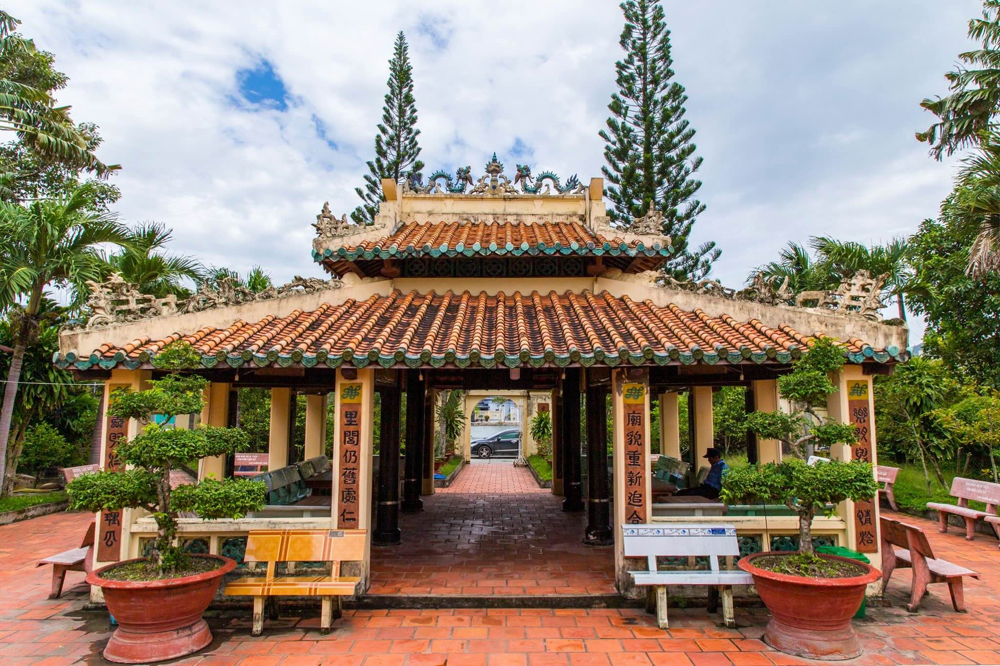
Mạc Thiên Tích: Kinh bang và văn chương
Sau khi nối nghiệp cha, Mạc Thiên Tích tiếp tục đẩy mạnh phát triển kinh tế, củng cố quốc phòng và mở rộng bang giao, qua đó nâng cao vị thế của trấn Hà Tiên trong khu vực. Một dấu ấn văn hóa quan trọng trong thời kỳ này là việc ông sáng lập Tao đàn Chiêu Anh Các. Tên tuổi của Mạc Thiên Tích cũng gắn liền với "Hà Tiên thập vịnh" - tập thơ ca ngợi 10 thắng cảnh địa phương, tiêu biểu như Bình San, Đông Hồ và Thạch Động.
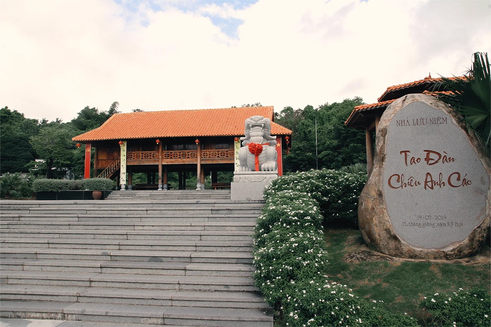
Đông Hồ – Mộng Tuyết: Gìn giữ hồn thơ Hà Tiên
Trong thế kỷ XX, thi sĩ Đông Hồ không chỉ sáng tác thơ, làm báo mà còn dày công khảo cứu văn học và lịch sử quê hương. Năm 1926, ông sáng lập Trí Đức học xá tại Hà Tiên, chú trọng truyền dạy chữ Quốc ngữ và bồi dưỡng tình yêu tiếng Việt. Bên cạnh đó, ông dành nhiều tâm huyết tìm hiểu di sản họ Mạc cũng như giới thiệu dòng văn học Chiêu Anh Các đến rộng rãi độc giả.
Nữ sĩ Mộng Tuyết từng là học trò tại Trí Đức học xá, sau này trở thành bạn đời và người tri kỷ văn chương của Đông Hồ. Ngoài làm thơ, bà còn sáng tác tùy bút, tiểu thuyết lịch sử và hồi ký. Những tác phẩm tiêu biểu của bà như "Đường vào Hà Tiên", "Nàng Ái Cơ trong chậu úp" và "Núi mộng gương hồ"... lưu giữ nhiều câu chuyện về đất và người Hà Tiên.
Thông qua sự nghiệp sáng tác và các hoạt động văn hóa, thi sĩ Đông Hồ cùng nữ sĩ Mộng Tuyết đã tiếp nối dòng chảy thi ca truyền thống, góp phần gìn giữ những ký ức đẹp đẽ của quê hương.
MỤC 05Y học cổ truyền & Cây thuốc
Từ thế kỷ XVIII, vị thế thương cảng giao thương kết nối với vùng Hoa Nam đã giúp Hà Tiên trở thành nơi hội tụ của nhiều lương y gốc Hoa. Quá trình giao thoa giữa tri thức Đông y truyền thống và nguồn dược liệu bản địa (như hồ tiêu, thảo dược vùng núi đá vôi...) đã mở ra một hướng tiếp cận mới trong việc nghiên cứu, giao lưu y dược Việt – Hoa.
Đáng chú ý, một số tài liệu chuyên khảo phổ thông ghi nhận sự xuất hiện của cây bạch tiền lá liễu (Cynanchum stauntonii) tại vùng Hà Tiên. Loài thảo dược này ưa sáng và đất ẩm, thường mọc ở ven bờ đập, các bãi đất trống hoặc trong rừng núi cao. Rễ cây được dùng chữa ho, long đờm, làm giãn cơ trơn khí quản, kháng viêm...
Tại Việt Nam, bạch tiền lá liễu phân bố tự nhiên ở Hà Tiên (Kiên Giang) và Sa Pa (Lào Cai). Ngoài ra, loài cây này cũng xuất hiện phổ biến ở nhiều vùng thuộc Trung Quốc. Mùa ra hoa và kết quả của cây kéo dài từ tháng 5 đến tháng 12 hằng năm.
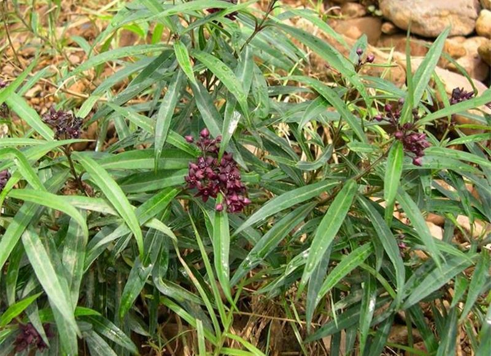
MỤC 06Ẩm thực & Đặc sản Hà Tiên
Nằm bên bờ vịnh Thái Lan, Hà Tiên sở hữu một nền ẩm thực phong phú, gắn liền với nguồn sản vật trù phú từ vùng biển và đầm Đông Hồ, đồng thời mang đậm dấu ấn giao thoa văn hóa giữa ba dân tộc Kinh – Hoa – Khmer. Những món ăn tiêu biểu như bún kèn, bún nhâm tôm khô, hủ tiếu hấp hay bánh canh chả ghẹ đã thể hiện rõ nét sự tinh tế trong cách kết hợp nguyên liệu và gia vị của cư dân địa phương.
Bên cạnh các món ăn dân dã thường ngày, vùng đất này còn nổi tiếng với cà xỉu muối, tôm khô, ốc giác cùng nhiều loại hải sản tươi ngon khác. Trong đó, cà xỉu là đặc sản của vùng nước lợ đầm Đông Hồ, thường được người dân đem muối để dùng dần; còn tôm khô tuy nhỏ nhưng có vị ngọt thơm tự nhiên, rất thích hợp để mua về làm quà.
Ngoài ra, món xôi Hà Tiên với đủ cả hai vị mặn – ngọt, cùng những chiếc bánh thốt nốt vàng ươm, thơm lừng cũng góp phần làm phong phú và hấp dẫn thêm bức tranh ẩm thực nơi đây.
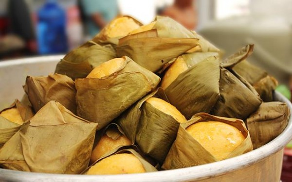
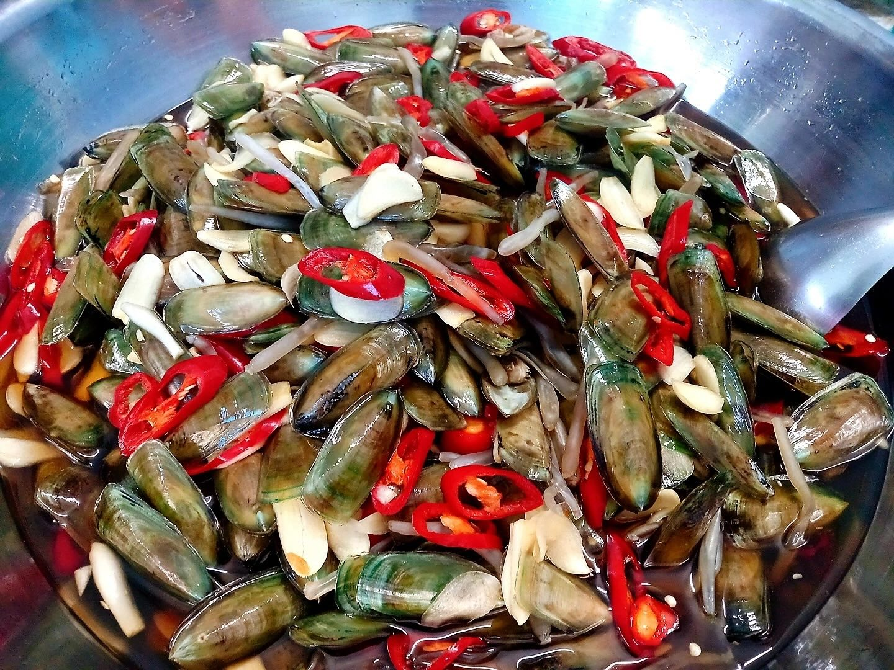
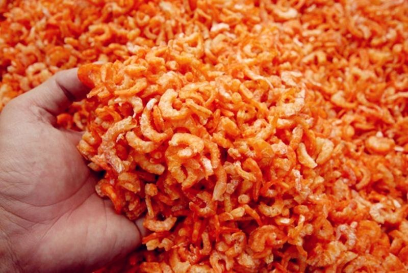
MỤC 07Di tích & Thắng cảnh
Núi Bình San và khu lăng họ Mạc
Tọa lạc tại khu vực nội ô Hà Tiên, núi Bình San từng đi vào thơ ca qua tập "Hà Tiên thập vịnh" của Mạc Thiên Tích với tên chữ Hán là "Bình San điệp thúy" (nghĩa là dãy núi trập trùng một màu xanh). Ngọn núi này cao khoảng 50m và còn được gọi là núi Lăng, bởi nơi đây có khu lăng mộ của Mạc Cửu cùng các thân nhân, tướng lĩnh họ Mạc - những người có công khai mở vùng đất Hà Tiên.
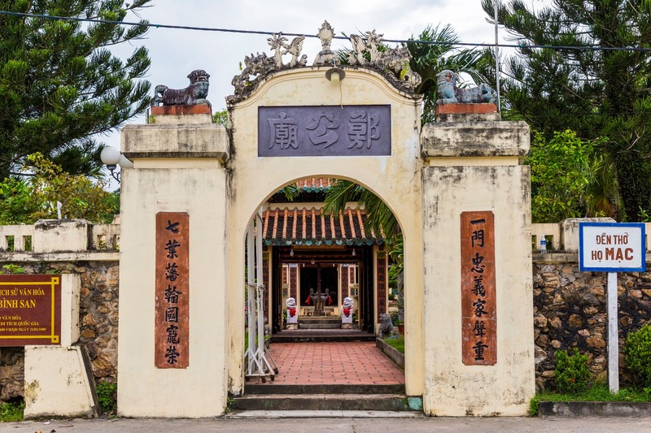
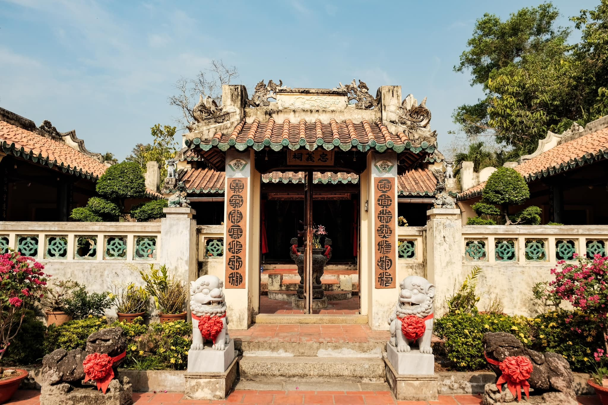
Chùa Phù Dung
Phù Dung cổ tự tọa lạc dưới chân núi Bình San, là một trong những ngôi chùa đẹp và thơ mộng nhất xứ Hà Tiên. Chùa có cảnh sắc thiên nhiên hữu tình, tô điểm cho non nước cõi biên thùy thêm nét trầm mặc, cổ kính. Không chỉ thu hút du khách thập phương bởi lối kiến trúc độc đáo, chùa Phù Dung còn lưu truyền nhiều giai thoại lịch sử làm thổn thức lòng người.
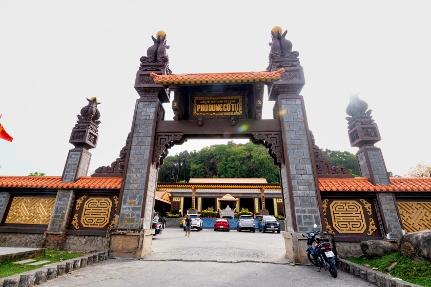
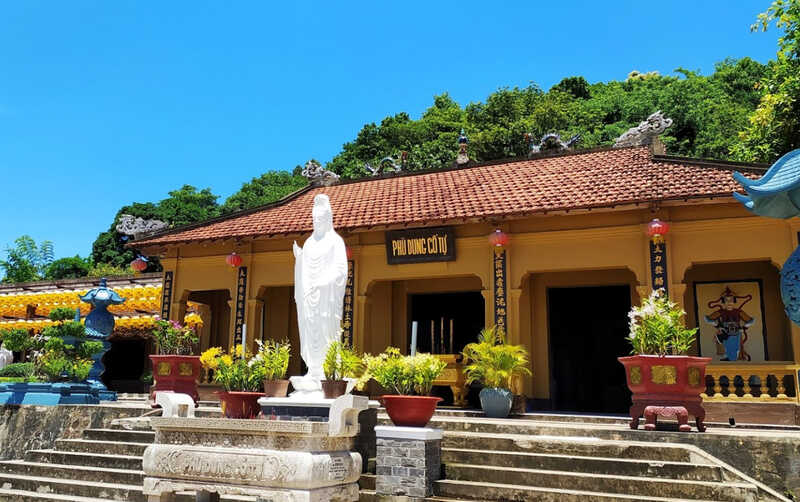
Thạch Động & Núi Đá Dựng
Thạch Động là một khối núi đá vôi cao khoảng 50m, từng được Mạc Thiên Tích đưa vào tác phẩm "Hà Tiên thập cảnh" với tên chữ Hán là "Thạch Động thôn vân". Bên trong động có nhiều khối thạch nhũ mang hình thù kỳ lạ và bắt mắt. Theo nhận định của các nhà địa chất, tầng đá vôi tại đây được hình thành từ kỷ Permi, cách ngày nay khoảng 250 triệu năm.
Ngoài ra, trong lòng động còn có ngôi chùa cổ Tiên Sơn được xây dựng vào năm 1790, thờ Phật Thích Ca và Quan Thế Âm Bồ Tát. Điểm đặc biệt của ngôi chùa này là phần chánh điện nằm sâu trong vách đá, mang lại cho không gian nơi đây vẻ thanh tịnh và sự mát mẻ quanh năm.
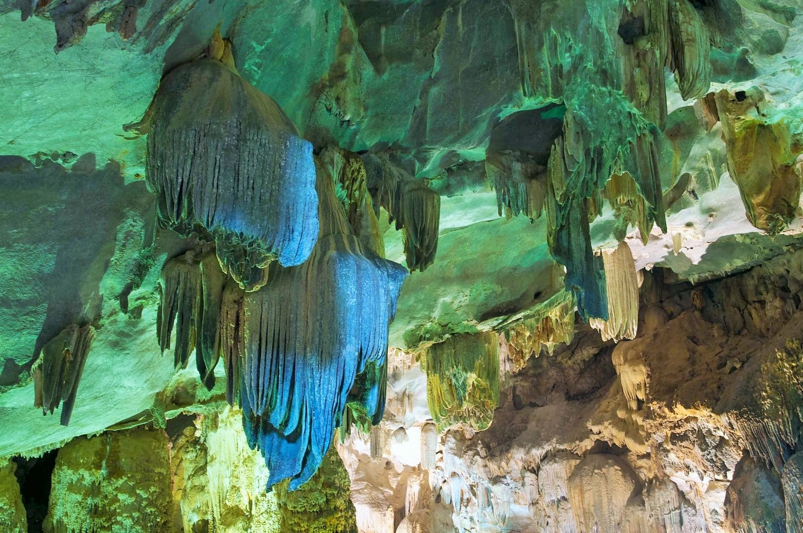
Núi Đá Dựng cao khoảng 100m, nằm giữa cánh đồng lúa xanh mướt. Ngọn núi này sở hữu 14 hang động lớn nhỏ như hang Bồng Lai, hang Thần Kim Quy, hang Cổng Trời..., mỗi nơi đều gắn liền với những truyền thuyết kỳ bí. Trong lịch sử, đây từng là tiền đồn ngăn chặn quân Xiêm La vào thế kỷ XVIII và là căn cứ cách mạng vững chắc qua hai cuộc kháng chiến trước năm 1975. Đặc biệt, núi Đá Dựng còn nổi tiếng với truyền thuyết về Thạch Sanh qua di tích hang Cội Hàng Đa – nơi tương truyền chàng từng sinh sống.
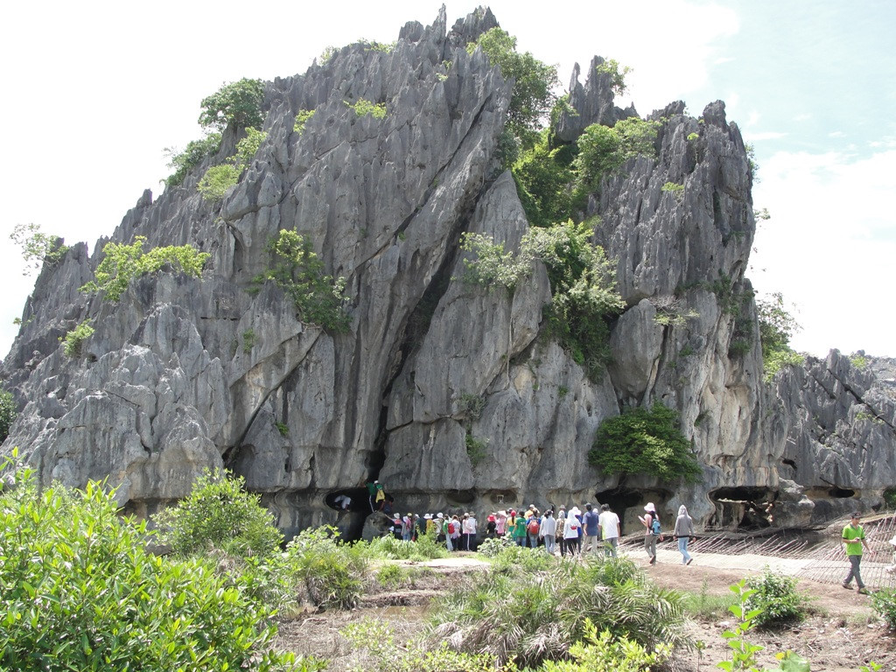
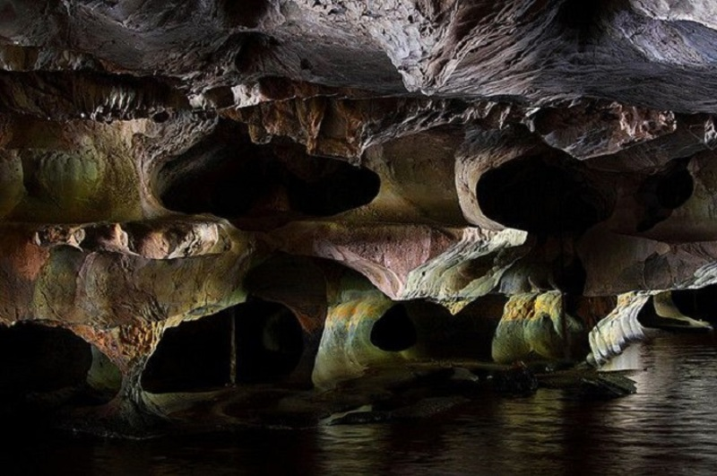
Đầm Đông Hồ, Biển Mũi Nai & Hòn Phụ Tử
Đông Hồ là một đầm nước mặn có diện tích 1.384,36 ha nằm ở phía đông Hà Tiên. Phía hữu ngạn đầm có núi Ngũ Hổ, còn tả ngạn là dãy núi Tô Châu sừng sững. Đây là nơi hội tụ dòng chảy của sông Giang Thành và kênh Rạch Giá - Hà Tiên trước khi đổ ra biển Tây (vịnh Thái Lan).
Từ lâu, Đông Hồ đã là một thắng cảnh thiên nhiên nổi tiếng của Hà Tiên, được nhiều du khách trong và ngoài nước biết đến. Đông Hồ đẹp nhất vào những đêm trăng sáng; khi nền trời không một gợn mây, vầng trăng lên cao in bóng xuống mặt hồ tạo nên một khung cảnh vô cùng huyền ảo.
Biển Mũi Nai (còn gọi là bãi Lộc Trĩ) là một trong những thắng cảnh nổi tiếng và thơ mộng bậc nhất tại Hà Tiên. Nhờ vị trí nằm sâu trong vịnh kín gió, mặt biển nơi đây quanh năm êm ả, hiền hòa. Nước biển mang sắc nâu sẫm đặc trưng của lớp cát chứa hàm lượng bùn khoáng dồi dào, vô cùng có lợi cho việc đắp bùn dưỡng da và thư giãn. Khu vực này sở hữu hai bãi tắm chính: Bãi Nô nằm cạnh xóm chài bình dị và Bãi Bằng sở hữu bờ cát thoai thoải, sạch sẽ, là nơi lý tưởng để tắm biển.
Hòn Phụ Tử tọa lạc tại vùng biển thuộc Khu du lịch Chùa Hang, xã Bình An, huyện Kiên Lương, tỉnh Kiên Giang (theo địa giới hành chính trước đây). Tuy không trực tiếp nằm trong địa phận Hà Tiên, tên tuổi của danh thắng này từ lâu đã gắn liền với vùng đất này.
Thực chất, đây là một hòn đảo đá vôi nhỏ gồm hai khối đá nằm trên cùng một bệ đá cao khoảng 5m: khối lớn là hòn Phụ và khối nhỏ là hòn Tử. Nhờ hình dáng đặc biệt đó, Hòn Phụ Tử từ lâu đã trở thành biểu tượng thiêng liêng của tình cha con.
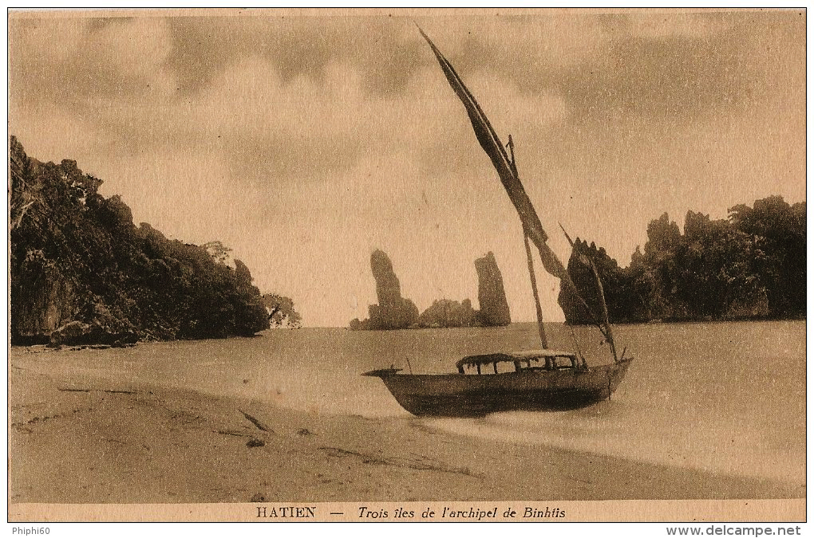